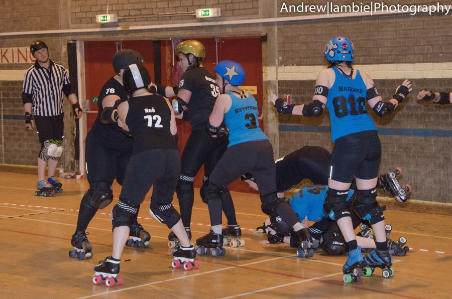
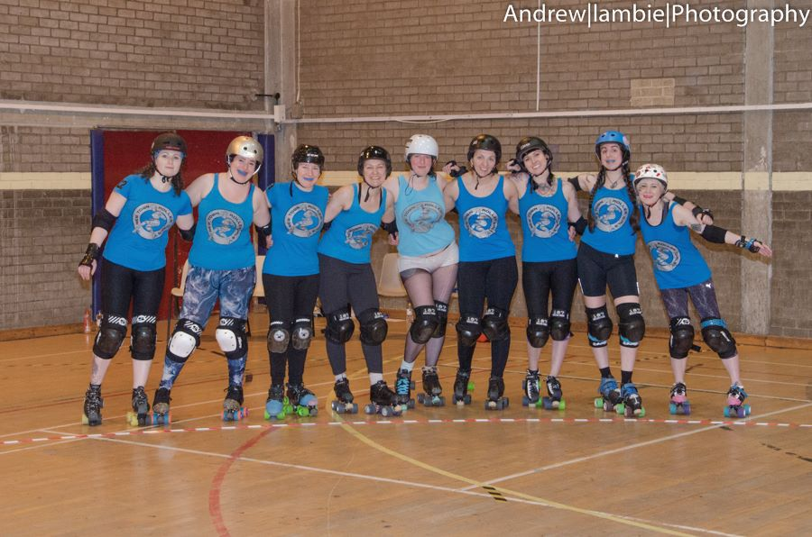
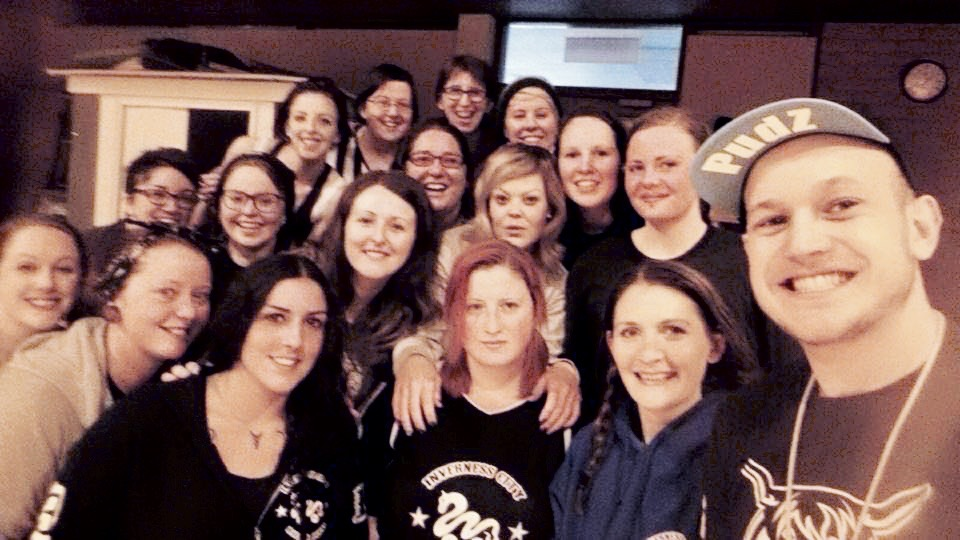
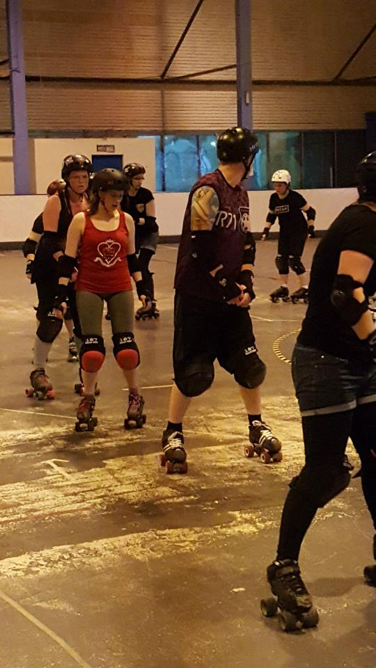
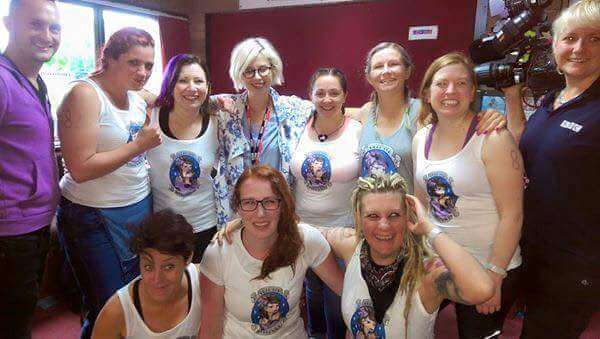
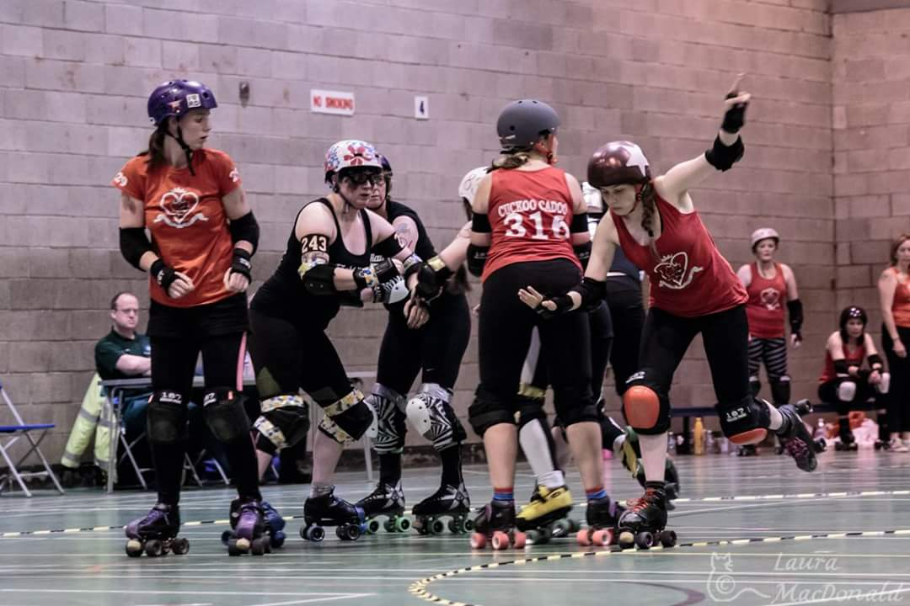

New Town Roller Girls Year in Review - 2015
As a very small league we found ourselves at the beginning of 2015 looking forward to a full year. Unsure of what to expect from the British Championships and excited about the prospect of bouts, scrims, and expanding our numbers through fresh meat sessions and recruitment drives, we couldn’t wait to see how it would unfold.
Full of hope and promise we saw ourselves compete in the Highland Rampage as our very first team effort without the help of guest skaters, and playing with only 10 of a team we did ourselves proud. We lost all our games in the competition but as a team we were excited at the enthusiasm and dedication that was shown by its members. Still full of hope and spirit little did we know this was to prove to be what would define us throughout the entire year. 2015 would gift us with a new and inspirational coach, would see us lose and gain great team members, would take us on multiple adventures within the UK and Europe, and would herald a new baby or two into the fold.
With the rampage behind us we headed into the British Championships with the same guts and determination. We secured funding, did a sponsored skate, car boot sales and other funding drives in an attempt to transport us across the country just to participate. Many tears and much laughter was dispensed along the way, and the courage of team mates shone through, as the novices amongst us played alongside the more experienced. Battling in most bouts with 8 to 9 players we never gave up, we always found a way to play, looking exhaustion, illness and injury square on and walling up regardless.
Looking at the statistics and having lost all of our 4 British Championship bouts and 2 friendlies, some would say that 2015 was an unsuccessful year for us, but I would have to disagree. Having fought alongside the ladies and gentlemen that make up our league, counting family, friends and team mates in the mix, I would say that we in many ways secured the win. Hosting our very first home bout and bringing Roller Derby into the news and home to West Lothian.
Roller derby is more than just a sport, it is a community, an all encompassing family that highlights everything you are and everything that you aspire to be. Being part of NTRG has seen me challenge myself physically and emotionally and with the support of team members has helped me to reach personal goals and slay inner demons. Like many families we have our differences but I know that when our combined strength is needed we pull together and support each other on and off track. NTRG has come to represent hope, hard work, and determination.

Speaking to the ladies and gentlemen of our league this sentiment is echoed, when asked to say what NTRG has meant to them common themes of family, friends, and fun shone through:
“Who you spend time with is who you become. It’s not what we get that makes us happy, it’s who we become. Then what we can give to become more. New Town has helped me to grow into the player I am today and embodies the heart and spirit of the sport I love. I will always strive to repay this kindness”
“NTRG is the first time I have been part of a team, I have been there for a full year and even though I have other priorities everyone is so friendly and allow me to feel part of the team. Being part of NTRG is like having another family on skates”
“Pleasure, pain, team, and family, win or lose, most of all fun”
“Before joining NTRG I was extremely unfit and over the last year I have seen my fitness level increase 10 fold, which was one of my main reasons for signing up! However having said that I have found that I have loved being part of a team and making new friendships with a diverse group of people. I have also learned new things about myself such as how resilient I am, how determined I can be when I put my mind to something, realising that with a bit of hard work and effort I am an alright skater. Learning to skate and play derby has been a great challenge for me and also a great escape from the everyday pressures of life”
“Derby girls got me through this year, just by being there. It’s the support you get with Derby that I love ….(and exercise and men in tights)”
“NTRG means friendship – I have loved getting to know everyone and feeling part of a team. Everyone is super lovely and there is always someone there with a hug or motivational words of encouragement to drive your determination forward”
“Watching the first roller derby event my wife participated in was a dual experience. Firstly you have the fear of her getting hurt and being injured. You know what will happen, you know what to expect but wait with trepidation for the first jam to start. Then it all kicks off and after you watch your loved one get up after being hip checked by a blocker, the adrenaline starts pumping and you're up on your feet shouting for your team. Discussing the merits of the game with your 7 year old son who is grinning inanely because mum has a star on her helmet. You shout cheer, holler and scream for the team, willing each and every point. They are out on track, sweating, panting and bleeding for a sport they love and you couldn’t be prouder. Roller derby is family. Roller derby is fantastic.”

So looking forward to 2016 we face the year with pride, pride of everything we have achieved, pride in every member, pride of our spirit and determination. Hopeful and excited to usher in new members, new experiences and increase out knowledge. Full of determination, motivation and the work ethic to succeed.
- AuROARa 812
2015 was ARRGmazing!

We had a comedy gig with a famous guy (remember Dylan Moran back in January!). The Reserves took on the Oxbridge double. The All Stars came second in the first ever British Championships! And we hosted THE best Champs day in May!
The All Stars took on Glasgow in June again, a month that also featured an excellent family fun day in Portobello! We had a Hunger Games themed Bootcamp in July! Those May the Quads be Ever in your Favour tops were a popular choice!
At the Fringe, the All Star Reserves took on Glasgows Maiden Grrders, and then we held an awesome All Star Expo with skaters from across Scotland and Northern England! Throughout the year we held some Taster Days and Fresh Meat intakes! And of course the year has culminated in the Home Season and All Star Reserves season! We've also said some sad goodbyes, but welcomed many awesome members.
Home Season 2015 was won by THE LEITHAL WEAPONS!! In a very closely fought game against The Skatefast Club, with the score being extremely close throughout. Congratulations to the Cherry Bombers for taking the victory in the third place game against our guests, The Rolling Bones - what a win! Thank you to ALL of everyone who helped at the Home Season, whether you skated, officiated, announced, helped as a member of the game crew, EVERYONE. THANKS!
We also got the FIRST Certified officials in Scotland! Which is pretty huge! And we had official reps at some of the biggest tournaments/games around Europe!
Our All Star Reserves came back from an excellent trip to Copenhagen at the start of November! They played both Copenhagen Roller Derby and Malmo's Crime City, in the one day! They did amazing for being pitted against such tough teams! So many giants. Hipster hostels. Team hang outs. Christmas. I think we can say it was still a successful trip!
And now the Reserves have a couple more games in the new year! In January they will be taking on Dresden Roller Derby at home, and we can’t wait! And then another in March!
The new rosters have also been announced, and the All Stars themselves have started training in time for, yes, THE BIG O! This is a fantastic opportunity and an amazing tournament. SO many amazing teams will also be there! Even the other ARRG (Arch Rival Roller Girls). And whether you can make it over to Portland (we wish), or can cheer and support from here, there is SUCH EXCITEMENT.
Non-bouting Leagues Roundup of 2015
This year has seen another uptick in the number of new leagues in Scotland, with both Helgin Roller Derby and Wee County Roller Derby joining the ranks of Inverness City, Fair City, Ayrshire and Doonhame Derby Dolls as leagues making the journey towards their first public bout. As traditional, we're covering all of these leagues together in a Review of the Year, as usually bouts are a big part of what the bouting leagues cover about in their own articles. Since we have so many non-bouting leagues this year, however, we're splitting this article over several pages for readability - click the links at the bottom of each page to move between them.
Every league forms its own relationships with the wider derby community when starting out, but some of our non-bouting leagues have developed particularly close ties. Inverness City Roller Derby were very happy that Helgin Roller Derby started up nearby in Elgin, and the two have been combining resources: "Helgin are fantastic and are growing so fast. We try to go through as often as possible to coach them and help them with anything they may need help with and they often come through to us for a session and with such a big turn out at these sessions it boosts team morale."
 Power of Scotland's PudZ, selfie with combined Inverness and Helgin skaters.
Helgin are equally happy with the relationship, as they benefit from ICRD's experience and numbers. "All of our skaters rave about Nat from ICRD’s sessions for days afterwards – she really works us hard and we learn a lot! […] We’re looking to link up with ICRD at least once a month in 2016, so that we can all get a bit more contact and pack skills practice – something that can prove difficult if you’ve got a session with low numbers." Of course, Helgin have also been keeping up their connections with the team to the East of them, and Granite City have been as supportive as they were at Helgin's founding, even donating kit and support for their fresh meat sessions. The Brawlermen also donated Power of Scotland's PudZ for a training session, "Our session with PudZ from Power of Scotland was brilliant – it was our first proper session where we got to practice game tactics and we learned so much!", which also included ICRD, "we had PudZ from POS run a session on walls and pack work which was also tremendously good fun."
Meanwhile, at the south end of the country, Dumfries' Doonhame Derby Dolls made the fortuitious discovery of nearby Carlisle's Border City Rollers, who are newly founded this year. The two leagues have quickly become quite attached, as Doonhame noted: "We only recently discovered that Carlisle had a team on the go through Facebook, one of our girls is from the area and she never even knew haha! This is now the closest team to us! We got in touch and done our own first ever guest coaching with 3 of our girls travelling down to their training night and they couldn't have been more welcoming, they're a great bunch of guys as we expected and they were so pleased to learn and understand where to go from where they'd got to. Georgie and Chloe Holmes helped start is up and have done well starting from scratch. We have kept in touch and they have been along to support us at games in Newcastle and Glasgow, making wee banners and being total fangirls which is amazing (it's usually us fangirling others!). "
RECRUITMENT AND TRAINING
All of the non-bouting leagues have been focussing on the three most important things for any newer league: recruiting skaters, training them to pass mins, and raising money to support all of this.As mentioned above, Helgin held several successful fresh meats this year, recruiting 19 since we interviewed them last, and have also gained some transfers from other leagues "We’ve gained another few regular skaters, including some skaters formerly of Granite City Roller Derby, New Town Roller Girls and Belfast City Rockets, and we’ve now got enough people training on a regular basis to be looking to put a team together". They also have a tremendously organised public training plan, as anyone can see from the regular updates on their Facebook page, "This started back when we were chopping and changing venues a lot, as we were still trying to find permanent training locations, and we needed to keep people informed of where the sessions were. Many people commented that they liked knowing what was coming up, so we just kept it going.
We like to be organised, and have a progressive training plan so that we can see the development of our Fresh Meat – sometimes sessions go to plan, sometimes you’ve got an odd number of people there and the ‘paired work’ session plan goes out the window! Slowly but surely we’re working it all out, and we hope to get our next batch of Fresh Meat minimum skills passed much quicker."
They've also been doing quite well at fundraising, having entered multiple grant shortlists, and also "doing rather well with community fundraising, and held another successful pub quiz at the end of August, keeping us afloat for a bit, and we’re looking to put on another at the end of January or beginning of February, to boost funds for 2016."
Inverness, being one of the more established leagues in this article, has been growing a little more slowly, "We've had a few intakes but the struggle to find new members in Inverness is ongoing, we've lowered the age limit to 16 to try grow the team a little, we've got a few new(ish) faces and everyone is coming on leaps and bounds, and we should fingers crossed have them all mins passed just after the new year."
Perth's Fair City Rollers have had an interesting year, given that we reported last year that they were aiming to bout in 2015. Instead, this year has been one of introspection and consolidation. "Over the past year we've redefined ourselves as a team; who we are, what we do and where we're headed. Our direction has become more bout focused and we've started to work towards becoming an actual bouting team again. Over the past year we've worked on aligning focus and skills, and recruitment. We're currently about halfway through our training programme of the new skaters we recruited in September, and are aiming to bout in 2016"
 The Wee-County Golden Gauntlet logo!
The Wee-County Golden Gauntlet logo!
Clackmannanshire's Wee Country Roller Derby have been attempting to retain the momentum from their initial launch (which we interviewed them about here), partly by launching their distinctive gauntlet logo, We really wanted our logo to describe the fight we have for derby, and our community spirit rolled into one. Its our take on the clackmannshire logo of the gauntlet, with 'Look Aboot Ye' as a tag line. It works as a double meaning, having to be aware at all times who and what is around you on track. There was a real buzz around the team in the beginning, it was great: lots of attention and press coverage. We had a strong initial recruitment and kept a steady flow of interest, with word of mouth travelling fast. It has been a challenge to form a solid basis for the team, but we have a great foundation of members now. Its been a tough year, of trial and error and lots of personal growth. We were overwhelmed by the support and commitment of the members we do have, as they get stuck in and really help to make our team a family. Looking at how far we've come and comparing it to how far we have to go to allow us to have our debut bout is quite a step, but were confident that we have the determination and the strong mind set to make it happen."
 Coach Graeme Gow keeping a watchful eye on the paceline at Ayrshire Roller Derby (Credit: Sally Wilkes)
Ayrshire Roller Derby, meanwhile, have enough mins-passed skaters that they're starting to attend scrims and the like. "ARD have had an excellent year. We were joined by coach Graham Gow of Power of Scotland and Mean City fame. Our team may be small at the moment but it is growing all the time! Our mins passed players are regularly participating in open scrims and learning all they can. We would really like to thank all the local teams that have helped and supported us this last few months." In addition, ARD have been at a whole host of fundraising and publicity-related engagements, including a stall at their local Christmas Fair. They've also had enthusiastic spectating presence at many bouts this year!
And, to the south, Doonhame have been growing strong, "Recruitment was a challenge to start, with maybe 6-10 people showing up at the start of the year, we then took a break from 'Fresh Meat' open nights and 're-evaluated our training / introduction methods. We then went on to having 2 of our most successful openers in Sept and October with a full house (of 30odd) both nights, and around half of that number dedicating and joining the team! Its the keeping them excited and committed that's the harder bit. We try to encourage everyone to the best of their ability and push those wishing to be pushed, but at a pace that's comfortable with them. We have been very lucky to be able to have a lot of amazing players come along and guest coach for us. To be able to have such a high profile skater like Stefanie Mainey come and guest at our bootcamp in May 2015 was amazing! She was brilliant and really put us through our paces on the track and giving us some great insights! We love learning new stuff and stretching our mindsets."
 Doonhame's 7 cherry popping skaters at Bristol Roller Derby's event. (Credit: Andy Jardine)
Like Ayrshire, Doonhame have a strong core of mins-passed skaters now, but they've been seeking out public cherry-popper bouts as well as scrims. Most notably, they even managed to appear on film in their first ever appearance (at Bristol Roller Derby's Summer Double Header): "There was 7 of us that popped our cherries in Bristol. It wasn't just any normal cherry popper though, we were filmed by the BBC 'See, hear' programme to promote the abilitly to skate with deaf / hoh players. What a rush! It was so nerve racking, exciting and hundreds of miles away from home, but we did it! After we got the taste, we actively started to look for cherry poppers, charity games, closed scrimms, anything to let us get out there to play. Its really difficult, frustrating, when you have a handful of players passed skills, gagging to play, but not enough players yet for a full team! Which leads to all of these brilliant events opening up their doors to us, where you learn just how special roller derby is. This has meant us travelling to Edinburgh, Dundee and Newcastle for scrimms and bouts to join other teams. The friendships and camaraderie throughout playing with other teams would be the highlight of travelling, and of course gaining the experience and playing along side some awesome derby gals. "
PLANS FOR NEXT YEAR
We asked each of the leagues about their plans for next year, and it looks like most of them have the same aim in mind: getting on track for their first public bout!Doonhame: "All in all I think 2016 is going to be amazing for DDD as we are pushing our girls hard to try and bag a full team line up to finally play as a proper DDD full team. Until then though the girls that have passed will be playing in mixed scrim and bouts when they can and it's great we're always thought of to take part. 2016 will just be Onwards and upwards for DDD. Watch this space!"
Ayrshire: "We reckon we will be putting a team together at the beginning of next year and we REALLY cant wait to get stuck into playing! I feel like it will be next year's [update] that has all the exciting stuff in it!"
Fair City: "[We] are hoping to pop our collective team cherry at the start of March 2016.
Hopefully, within the year of the restructure, we'll be back on track and competing against other teams. Exciting times for the FCR!"
Wee County: "For next year we're hitting training and promotion head on, really pushing ourselves to the limits i know we can achieve. New and improved training programmes will be put in place to fully structurise the fresh meat members, also one for the more advanced skaters. Were looking to get into the community in a big way, and doing our bit for local charities. Our goal for 2016 is to integrate roller derby into the Wee County in a big way, so as always, look aboot ye."
Helgin: "Well, fingers crossed, we get all of our current skaters mins passed in early 2016, and then we’re going on the road to join some boot camps and open scrims to get a bit more experience in game play. This, along with regular training with ICRD will hopefully have us bout-ready by the end of the year!
We’re planning to hold three more Fresh Meat intakes – probably around February, May and September to keep our skater numbers up, and probably a similar number of fundraisers to keep us going financially. We’re also hoping to get our Business Plan finished over the Festive period (since our training venues are closed and we can’t skate :() and will be able to widen the net of the funds we can apply to, so that we can get scrim vests, more hire kit, more people first aid trained, and even cover our hall hire.
We’ve also been in discussions with Moray Sports Centre (a new state-of-the-art sports centre planned to be built on the southern boundary of Elgin) and things are looking hopeful that we may well have a new home in the future – one large enough to host bouts!"
Inverness: "We are looking forward to 2016 and having a team ready to start playing after all these years, we will be frequenting Dundee's open scrims with everyone learning to nso's for a couple of turns and then scrimming when mins passed, also we will have a regular session every month with Helgin to keep building on pack skills and game play. Fingers crossed that later in 2016 Icrd will hit the track as a team!"
If all goes to the plans above, it's quite possible that next year, there will be no non-bouting leagues roundup, as there'd only be one or two leagues left to cover in it! As always, it's an exciting time with the growth of Scottish derby, and 2016 might see the next big wave of leagues entering the bouting world.
Auld Reekie Roller Girls - Home Season Final 2015

A HEART-STOPPING home season final saw the Leithal Weapons swoop to victory by just two points. Auld Reekie Roller Girls' (ARRG) three home teams - the Leithals, Skatefast Club and the Cherry Bombers - had battled throughout autumn for the chance to take home the 2015 trophy. Skatefast had beaten the Leithals in the first home season head-to-head and, with the Leithals struggling to field a full team for the final due to injury and illness, looked like the stronger team at the first whistle. Skill levels were closely-matched and the lead switched several times, as both teams pushed their opponents to pull out their very best performance. Skatefast were leading by half-time and victory seemed likely, but the Leithals re-entered the track with renewed determination. With five minutes to the end, Skatefast had pulled ahead by 20 points, leaving the Leithals praying for a power jam. Suddenly, the opportunity opened up with excellent defensive work from the Leithals in the very last jam. EmKarp blasted through the Skatefast blockers and the crowd held its breath and held back tears as the points gap closed. A smart star pass to Tuna Lovegood for an extra energy kick sealed the deal... Or so the Leithals hoped. The unofficial result was carefully checked as both teams teetered on the brink of celebration for a score that could have gone either way. Finally those two crucial extra points were verified and the Leithal Weapons were officially declared the 2015 winners.
 Leithals captain Prawncess Die said she was thrilled for her team.
She said: "We went in as the underdogs.
"We thought we had a good chance but we were playing short and we had lost the last game against them.
"It was so close - I kept looking at the score thinking we can still do this.
"We drifted down 20 points a few times and, in the last few minutes, I did think that was it.
"I thought 'at least we've put up a close game'.
"Then to actually win was just fantastic."
Prawncess Die added she was particularly proud of the newest players on the team.
She said: "Dani was just outstanding, especially as a jammer.
"Everybody was playing really well but she played every position and switched from one to the other, which was very impressive."
Leithals captain Prawncess Die said she was thrilled for her team.
She said: "We went in as the underdogs.
"We thought we had a good chance but we were playing short and we had lost the last game against them.
"It was so close - I kept looking at the score thinking we can still do this.
"We drifted down 20 points a few times and, in the last few minutes, I did think that was it.
"I thought 'at least we've put up a close game'.
"Then to actually win was just fantastic."
Prawncess Die added she was particularly proud of the newest players on the team.
She said: "Dani was just outstanding, especially as a jammer.
"Everybody was playing really well but she played every position and switched from one to the other, which was very impressive."
Skatefast Club captain Trifecta Gadget said everyone was very emotional. She said: "It was a really tight game through every single jam and we never really felt safe. "It was good to be in the lead at the end of the first half but I knew we were going to have to bring our strongest game. "The teams were very evenly matched and I think we lost it on just a couple of jams against some really amazing Leithals players." Gadget also praised the newest skaters on her team. She said: "We all kept our defence strong and stayed together really well. "It was only because we played so well as a team the score was so close. "I could see how much more confident everybody was by the end and I'm really proud of every skater."
Lothian Derby Dolls round up of 2015
2015 has been a busy year on and off skates for Lothian Derby Dolls.
This year the Dolls have been really focusing on progressing our new skaters into the team, building on the skills the experienced skaters already have and being involved in helping the wider roller derby community.
The Dolls are very proud to have 6 skaters bouting in our team who have come through the LDD fresh meat programme this year and one referee passing his refereeing tests to be officiating regularly. With all the excitement and skills of the last fresh meat who graduated in December, we are going to have even more skaters hot on the Dolls’ heels.
LDD skated in three public bouts against the Central Belters in May, GCRD ‘B’ team, the Fight Hawks in September and New Town Roller Girls in October. LDD put together the Dolly Mixtures to play against DRG ‘B’ team in September with skaters from the Central Belters, Doonhame Derby Dolls, Voodoo Dollies and Mean City.
 LDD taking on Granite City B, the Fight Hawks (Photo: Laura MacDonald)
We also had a wonderful year of being out in the derby community more, which has helped us build strong ties with teams such as BCR's Central Belters and Capital City Roller Derby. LDD have been happy to have some co-ed experience with CCRD and enjoy our new found partnership. The Dolls have also been busy this last year taking part individually, guest skating, refereeing, NSO-ing and helping out with other teams.
Our events team have been busy organising all our fundraising events as well as bouts, scrims and meetings.
LDD are always looking to skate on different floors and were delighted to be given the opportunity to skate at Transgression Park, our local skate park. LDD and TP are working on a partnership, so watch this space!
LDD were lucky enough to welcome [London Rollergirls + Team England coach and Southern Discomfort skater] Ballistic Whistle for a training session which all our Dolls got so much from, with some finding themselves a little star-struck.
| A word from our 2015 Captain Psycho |
| In 2015, what was your LDD highlight?
Being nominated as captain for the Doll Stars for 2015. How do you feel about how far LDD has come?The team has improved massively over the years since the start but more so in the last year due to the commitment of the league members. Your personal proudest moment of 2015?Seeing 5 of the last fresh meat to go on and play their first game and receiving my award for the most inspirational Doll. I was totally gobsmacked. What are you hopes for 2016?To see the creation of the 2nd LDD team, the Rising Stars. |
LDD are also excited to welcome two more LDD babies to our team in 2016 and can’t wait to meet them both.
LDD have come so far in the last year and we have no plans to slow down in 2016.
Love and Shoves, Lothian Derby Dolls!
Fierce Valley Roller Girls - Review of 2015
2015 was another busy year for Fierce Valley Roller Girls, highlighted by topping their tier in the first ever British Champs, and rounded off with a fifth birthday celebration. We spoke to Chair and Parma Violent WhoopAsh for her take on the year.

November 2015 marked the end of your first year as Chair of Fierce Valley Roller Girls. Tell us a little about your experience in this position this year.
This year has been a whirlwind of activity for FVRG with many highs and thankfully just a couple of lows. Overall I’m ridiculously proud of what we have achieved.
Griz (one of FVRG’s founders) had been Chair since FVRG’s inception and she left some pretty big shoes to fill. Luckily I had sat on the Board with Griz (as her Vice Chair) for the year before so had learned direct from the master :-) and was familiar with how the league operates. Having attended UKROC in 2014 I was also full of ideas of what we should be focusing on going forward to grow and strengthen the league.
The Board were incredibly busy throughout the year, and whilst we didn’t achieve everything we set out to, we did achieve a lot, and this is a testament to the effort and support of the other Board members. We have a clear plan of activity for next year too so we’re taking a well earned break over the Christmas period and will be back raring to go in January.
FVRG took part in the first British Champs this year, what did this mean for the league? What made it different from previous years, and how did the team prepare?
Being part of Champs has led to real friendships being formed between ourselves and the other leagues involved. We already had links with the local leagues, but now have friendships and support links with both Preston and Spa Town due to meeting them, and partying with them, numerous times over the year. This is one of the key things I’ve personally taken away.
From a league perspective, being part of Champs has allowed us to show the calibre of our Refs and Officials and our ability to host a good game. We were also able to give lots of support to the less experienced leagues within the tier, providing Head NSO’s etc.
When it comes to prep for the team we pretty much continued as is. Our Coaches tailor our training in the run up to games based on our opponents and what we areas we need to develop. We run a charter of 20 and select our teams from that charter. Most of our charter have skated together for a long time so are all fairly bonded. One thing we did try to work on was our endurance for the final. Clearly we still have a bit of work to do there, as anyone that seen the Wolverhampton game will testify ;-)

Away from the track, how has the league developed this year?
We started our year by getting the whole league together to workshop and agree FVRG’s vision, mission statement and values. We had a great turn out and it was inspiring hear everyone’s views on what we are and what we want to become, and encouraging that generally speaking we all aspired to the same things. For anyone interested, you can check out what we came up with on our website (http://www.fvrg.co.uk/about/our-values/).
At the close of the previous year we had identified two key areas of focus. For the first time ever we had closed the year making a loss financially so we agreed that one of our key focuses for the year should be fundraising. We also identified that our recruitment and retention of skaters needed attention; with more leagues than ever in the central belt we agreed it was important that we promote what is unique about FVRG and also make more effort to integrate new skaters into the league fully, and at an earlier stage. Throughout the year we put on many successful fundraising events ranging from smaller scale events like car boot, clothes swaps & public scrims, to our hugely successful pub quiz, Halloween party and 5th Birthday Ball. We also introduced some halftime activities to our games ‘chuck a duck’ anyone? J To support our skater recruitment and retention objective we rebranded our Fresh Meat promotion, relaunched our new skater buddy system (Fierce Friends), and also implemented Welfare Reps. I’m pleased to say both of these initiatives were hugely successful and we’ve closed the year in profit and with healthy numbers in our Fresh Meat and Intermediate sections.
Other less exciting, but equally important, development was the formalisation of various policies and the introduction of a league contribution measure.
What do you think was FVRG's biggest achievement in 2015?
I can’t pick just one thing here, I think our achievements are all intertwined. Overall I am most impressed with how the league have rallied at the tougher times and continued to act in a positive and professional manner throughout the year. We celebrate our successes but are always looking at where we can improve and what we can do differently next time to make things even better.
And what challenges did the league face?
Like many other leagues across the UK, one of our key challenges is balancing the work load across the league. Everyone has lives outside of Derby, but if someone doesn’t do it, it doesn’t get done. We struggled a bit to get people to take on elected positions this year which led to the Board managing more areas of the league than we would have liked. However, the work that we’ve done on bringing in new skaters and getting them engaged at an earlier stage is really starting to pay off. At our recent AGM we had nominees for every position and no awkward ‘someone needs to do this guys’ moments. We’ve also found that league engagement is up. Maintaining this, and improving it further is one of our key objectives for this year.
 Photo courtesy of Laura MacDonald
Photo courtesy of Laura MacDonald
What have been your personal highlights?
I really struggled with what to pick here, there have been lots of personal highlights. From a league perspective I think I’ll need to go for facilitating the production of our vision, mission statement, and values. From skating I’d have to say the Manchester game. We skated short but played as a really solid team and I remember doing some stuff on track that was effective and I was pretty happy with.
Finally, can you give us any idea of what to expect from FVRG in 2016, and beyond?
Absolutely. The Parma Violents are taking part in Champs 2016 and are looking forward to stepping up to Tier 3, further developing our skating ability and team cohesion, playing more challenging teams, and forming links with other leagues. We’re hosting a charity Sur5al game in February, in supporting Stirling’s Woman’s Aid, and play Zurich Roller Girls in April. The calendar is filling up for the rest of the year too with so many teams wanting to play us. From a league perspective, FVRG have excellent Coaches and Officials, and 2016 will see us formalising training plans to support members developing into these roles. We’ll also continue to work on our skater recruitment and retention, put on fun events for the league and our fans, and support our local community.
Fierce Valley Roller Cubs - Review of 2015
Following on from a year of firsts in 2014, 2015 proved to be another busy year for Fierce Valley Roller Cubs. With three fresh meat intakes throughout the year, skater numbers have grown to around thirty 5-17 year olds regularly attending training, across three skill levels. We have retained a large number of skaters from our first few intakes, meaning that at the moment, the majority of our members are level three skaters, although a successful taster session at the start of December should help to boost numbers in levels one and two.
 This year, Fierce Valley Roller Cubs were invited by three different leagues – Bairn City Rollers, Dundee Roller Girls and Fierce Valley Roller Girls – to take part in double headers. The game in Dundee marked the first time the Cubs played away from Grangemouth – the Cubs word is spreading far and wide! Several newer skaters played for the first time in public at one of these games this year, and all loved the experience. From a coaching point of view, it’s always satisfying to see everything we work on in training come together in a game.
This year, Fierce Valley Roller Cubs were invited by three different leagues – Bairn City Rollers, Dundee Roller Girls and Fierce Valley Roller Girls – to take part in double headers. The game in Dundee marked the first time the Cubs played away from Grangemouth – the Cubs word is spreading far and wide! Several newer skaters played for the first time in public at one of these games this year, and all loved the experience. From a coaching point of view, it’s always satisfying to see everything we work on in training come together in a game.

This year also saw some changes to the way we structure our training, due to a change in the JRDA minimum skills, which brought them almost in line with WFTDA’s mins. This meant that our advanced skaters, i.e. those that had passed the “old” level three, had to work towards the new skills. Despite a step up in skill level and difficulty, all of our skaters worked hard and we already have quite a number who have passed the new level three. For 2016, our goal is to play against another junior team, which has proved difficult so far due to the lack of other juniors. Fierce Valley Roller Cubs is almost unique in being both co-ed and open to kids as young as five, with most others being either female only, aimed at teenagers, or both. We are ever hopeful that the growth in junior roller derby will produce plenty of opponents for us! The last words go to a Cub, Hayley:
How long have you been part of Cubs, and why did you get involved? I've been involved with the Cubs for just over a year now. Like many I first found out about roller derby after watching Whip It, and I quickly became obsessed with the sport.
At this point the Cubs were still in the process of setting up and I went to see my first game in Edinburgh, which made me want to play even more.
I ended missing the Cubs starting as i was busy with school and the idea of playing derby slipped my mind, until my dad suggested I see if a junior team had started yet. I then found out that the Cubs had started up and were the only junior team in Scotland, and that they were holding a freshmeat intake in the next couple of weeks.
I was really nervous about joining, despite having bought skates a few years back when I had first found derby and getting a bit of practice in. At the taster session I fell and ended up having to get carried out by my dad and I went to the hospital the next day, thankfully nothing was broken (I did however end up with biggest bruise of my life), and from then on I was absolutely hooked on derby.
Has your involvement in Cubs changed this year? This year I have been helping out at the Sunday sessions for level 1 and 2 skaters as an on skates helper. In doing so my own skating skills have improved, as I've been able to spend more time on skates, but I've also been able to see our fresh meat getting better and more confident at skating and help them develop into great skaters. I've been able to use this volunteer experience to help with my university application and I'm incredibly grateful to all the coaches at the Cubs for this, as skating has given me skills that I can use in other aspects of my life, such as perseverance and commitment, as well as strengthening my confidence.
What was your biggest achievement this year? My biggest achievement has been passing level 3 for the second time, after the requirements were changed to be closer to WFTDA's minimum skills, which included the dreaded 27 laps in 5 minutes. When I first started skating I thought there was no way I could ever skate that fast or be able to do things like transitions and backwards skating. This year I've really seen myself improve, going from fresh meat at the end of 2014 to advanced now. I've also played in two games this year, including my first game ever, which were also a big achievement. Although both times my team lost, it was amazing to see everyone working together and trying their absolute hardest, no matter what position they were playing. I'm sure anyone that was in attendance will say our last game of the year was an incredibly tense and well fought game, with a lead change of 2 points in the last jam!

Hayley jamming in her first game
And what was the most memorable thing you did as part of Cubs? Taking part in my first ever game has to be the most memorable and terrifying thing I've done with the Cubs. I was so nervous before and couldn't imagine myself jamming and definitely not getting lead jammer and picking up points for the team. Although I was shaking before I felt great afterwards. I was incredibly proud of myself and my team for working so hard. I was also proud of the skaters on the other team for putting up such a good fight and playing so well. The second game I played in this year was also memorable as I could see just how much myself and the other skaters had improved in only a few months, as I found that we were playing together as a team much better, by playing offensively to help our jammers and using techniques such as star passes.
What would you like to see in 2016 for FVRC? Unfortunately I won't be with the Cubs for all of 2016 as I'll be turning 18, but I would love to see the Cubs playing other junior teams and continuing to grow in numbers and talent. As there are more junior derby teams starting up in the uk I think 2016 will be a great year for the Cubs to hopefully get to show off all the hard work that the skaters and coaches have put in. I hope that even once I've left I'll be able to come back and support the Cubs, and see the young skaters I've trained with continue to get better and better.
All photos courtesy of Laura MacDonald.
2015 A year in review for Capital City
2014 was a year of firsts for Capital City, which saw them have members take part in the first ever Men's Roller Derby World Cup with Power Of Scotland, play their first ever co-ed game under the name Capital Chums then round off their year off by hosting and playing in their first ever home game. 2015 started with their AGM and voting in a new captain (Despicable V) and vice (Dafty) who would guide them through the next 9 months of games they had booked.
2015 was their first full bouting year and their bout management had been working hard to line up games. Unfortunately one of their games had to be cancelled when the opponents lost their training venue and another two games ended up being postponed until 2016.
This year saw the first ever Scottish Men's Roller Derby Nationals tournament being held over the course of the year. This saw all the bouting men's teams in Scotland (Bairn City Rollers, Capital City and Mean City) face off against each other during the year, to see who would be crowned the first Scottish Nationals Champion.

Capital City's first game of the year and the first game of Scottish Men's Roller Derby Nationals was against Bairn City Rollers, which saw them travel to Grangemouth to play the Skelpies on their home turf. The final score was Skelpies 192 to CCRD 127 in what was a hard fought game from beginning to end that saw both teams only fielding 10 skaters.
Due to the cancelled and postponed games It would be almost 5 months until Capital City took to the track again. In that time they took in a few new skaters (Darth Evader and Mad Science) and were working hard at getting them through their mins ready for the games later on in the year. They also had four skaters (Bounce, Dafty, Tequila Jammer and Despicable V) make it into the 30 training squad for Power of Scotland for the Men's Derby World Cup next year. Of those four two (Dafty and Tequila Jammer) made it into the final selection of 20 skaters going to Calgary next year and also took part in the 4 nations tournament, which saw England, Scotland, Wales and France all play each other over the course of a weekend.
 Darth Evader #54
Darth Evader #54
 Mad Science #36
Mad Science #36
Their Third and final public game of the year was on the 19th of October when Mean City paid them a visit in the final game of the Scottish Men's Roller Derby Nationals for 2015. As Bairn City had won both of their games they had been crowned the 2015 Champions but this game would decide who got 2nd and 3rd place. At the final whistle the scores were Capital City 158 - Mean City 217, meaning Mean City took 2nd place and Capital City took 3rd in a very hard hitting and fought game.

On a sadder note, during 2015 Capital City and Scottish derby also said goodbye to a couple of faces. After all our public games were played Deathworm Jim decided to hang up his skates. Having been with Capital City from their inception his presence will definitely be missed on and off the track. At the beginning of the year, an old familiar face returned to Capital City, transferring from Mean City. Unfortunately not long after the Chaos engine game, Bounce also decided that the time was right for him to also hang up his skates.
But before the end of the year Capital City wanted to fit in one last thing. At the beginning of December they invited everyone's friends from the North, the Granite City Brawler Men down for a closed game, which both enjoyed so much that a return game has already been planned for next year. For that game they also voted in their new Captain (Hajuken) and Vice (Critical Hit) to get them ready for the year ahead.
Granite City Roller Derby- A Roundup of 2015

2015 was a crazily busy and exciting year for Granite City roller Girls. We took part in British Championships for the first time, gained an accredited NSO, some of our members left to pursue new adventures, we expanded our league and at the end of 2015, we changed our name.
Our Northern Fights took part in British Championships which was so exciting for the entire league! We were placed in Tier 3, Regional North; along with our good pals Dundee Roller Girls as well as Sheffield Steel Rollergirls, Furness Firecrackers, Liverpool Roller Birds and Halifax Bruising Banditas.
Our first game in February saw us playing against Dundee Roller Girls. A fierce first game of the season and Champs! Dundee took the win with 366 to 58.
There wasn't long to wait until our next game in March where we were paired up against Sheffield Steel Rollergirls. The game was close and moments were tense, too tense. My poor wee heart! Final scores were GCRG 144 and SSRG 186.
In June it was our turn to play Liverpool Roller Birds who scored 284 to our 111 with our next game just around the corner.
July saw GCRG take on Furness Firecrackers who won our game with 325 to 112.

Photo credit: the lovely Ian McCreadie
In August the Northern Fights played their last game of 2015 British Championships against Halifax Bruising Banditas. We won our final game of the year with a score of 226 to 72.
I spoke to Berocca Bama, the Northern Fights co-captain for 2015, about taking part in British Championships. "The Northern Fights had the privilege of taking part in the 2015 British Championships. It was an exciting year and although we started off with many skaters who were new to the team, every single one stepped up to the challenge and we went from strength to strength, surprising ourselves and others along the way. The dedication and drive of each sportswoman on the team makes me very proud to have played alongside them this season and fills me with excited anticipation for all that 2016 holds. Go Fights! "
This year we had a record breaking, based on no fact at all other than it seemed a huge amount, number of skaters coming up from fresh meat together. One intake generated 12 new league skaters. 12! That’s almost an entire team. This increase in mins passed skaters is a combination of all of the hardwork put in by our fresh meat training squad (namely Shan, Krusty, Berocca Bama and Nikki) and the hardwork and determination that our ‘noobs’ bring with them to training each and every week. As a mentor I get to witness this first hand…and yes…I have cried many a proud tear.

Photo above: 11 of our 12 strong mins passed skaters from the start of the year, followed by 6 more later in the year
This increase in mins passed skaters necessitated the need to introduce a second team. So, in 2015, Granite City Roller Girls welcomed their B Team. The Fight Hawks. Kakaw!!
The Hawks played their first game in September against Lothian Derby Dolls. It was a tense game and I think we all learned never to start celebrating a win until the score says ‘Official’. A win was taken and fun was had all round.
In October the Hawks played Mean City. A loss was taken this time around but so much was learned and again, great times were had.
I spoke to Fight Hawks' co-captain Whips 'n' Lashes about our newest team.
"2015 was an exciting year for GCRD with the creation of our B team – The Fight Hawks. Fierce and determined we rose to the challenge, with our first game together being a nail biting win. For a lot of our ladies this was their first ever public outing and the professionalism, attitude and energy they showed made our league and support very proud! 2016 is already looking like a good year and we hope to continue our development not only as a team but as a league and we are looking forward to the next lot of skaters coming up. Kakaw!"

Photo credit: the glorious Dave McAleavy
Some say ‘you learn more in defeat that victory’, I can’t speak for everyone but I feel this is true. We may not have had an amazing win streak this year but after every game we have learned about ourselves and our team.
December will see the annual GCRG Christmas ceildhi where we will celebrate our achievements of the year. Through the medium of dance and good times.
The decision was made this year to rebrand. I, for one, am ridiculously excited about our new colour scheme. As a league and as skaters we are growing and we voted to change our name from Granite City Roller Girls to Granite City Roller Derby.

Picture above: our super amazingly fantastic new logos
A huge thank you goes out to everyone who has helped us to have an amazing 2015; referees and NSOs, we couldn’t do any of this without you, announcers and photographers, our wonderful training team, everyone who has helped make bout days happen, our fans for never failing to keep our spirits high.
So here’s to 2016 and GRANITE CITY ROLLER DERBY!!!
Dundee Roller Girls - Review of 2015
This year was set to be one of the busiest for DRG with their involvement in British Championships meaning a lot of travel around the north, as well as a few home games and a full Home Teams tournament.  What followed was a hectic season with the Tayzers playing more games both home and away than ever before.
First up was a repeat of the first game of the previous season against Granite City, but this time as part of Tier 3 North for British Championships. This was a slightly surreal game, playing one of our closest neighbours in Rainy City’s Thunderdome in Oldham. DRG’s Tayzers again took the win, 366-58.
The following game against Halifax was forfeited by Halifax, giving DRG a 300- 0 victory.
The next few months saw the Tayzers take on Liverpool, Sheffield and Furness in the final three champs fixtures. Two losses (Liverpool 152-115 and Furness (173-108) and one victory (Sheffield 190-135), meant that DRG finished a very respectable 3rd in the first champs season, only narrowly missing out on a playoff place.
With the tiers having been rearranged for next season DRG will be looking to progress from this and aim for promotion.
The autumn began with the Tayzers and Bonnie Colliders playing some home games. The Colliders team was all change from last season, with the game being the first for many. Their first opponents were the Dollie Mixtures (a mix of skaters from leagues across Scotland). The Dollie Mixtures experience showed and they came out on 185-110. The second game of the day saw the Tayzers take on another DRG in the form of Dorset Roller Girls. The home DRG took the win 195-104.
Following on from this in October, the Colliders took on Newtown, winning 234-76 and the Tayzers victorious in a very tense and close game against Dublin B team 238-195.
November held the final games for the Bonnie Colliders and Silvery Tayzers. The Colliders were taking on BCR’s Central Belters with the visiting team taking the win 171-95. The Tayzers then had their first experience of European opposition with the visit of Kallio Rolling Rainbow’s B team the Kinapori Fistfunkers all the way from Helsinki. This was a really exciting game to watch with a different style of play from the Finns who ultimately came out on top with a 261-134 win.
What followed was a hectic season with the Tayzers playing more games both home and away than ever before.
First up was a repeat of the first game of the previous season against Granite City, but this time as part of Tier 3 North for British Championships. This was a slightly surreal game, playing one of our closest neighbours in Rainy City’s Thunderdome in Oldham. DRG’s Tayzers again took the win, 366-58.
The following game against Halifax was forfeited by Halifax, giving DRG a 300- 0 victory.
The next few months saw the Tayzers take on Liverpool, Sheffield and Furness in the final three champs fixtures. Two losses (Liverpool 152-115 and Furness (173-108) and one victory (Sheffield 190-135), meant that DRG finished a very respectable 3rd in the first champs season, only narrowly missing out on a playoff place.
With the tiers having been rearranged for next season DRG will be looking to progress from this and aim for promotion.
The autumn began with the Tayzers and Bonnie Colliders playing some home games. The Colliders team was all change from last season, with the game being the first for many. Their first opponents were the Dollie Mixtures (a mix of skaters from leagues across Scotland). The Dollie Mixtures experience showed and they came out on 185-110. The second game of the day saw the Tayzers take on another DRG in the form of Dorset Roller Girls. The home DRG took the win 195-104.
Following on from this in October, the Colliders took on Newtown, winning 234-76 and the Tayzers victorious in a very tense and close game against Dublin B team 238-195.
November held the final games for the Bonnie Colliders and Silvery Tayzers. The Colliders were taking on BCR’s Central Belters with the visiting team taking the win 171-95. The Tayzers then had their first experience of European opposition with the visit of Kallio Rolling Rainbow’s B team the Kinapori Fistfunkers all the way from Helsinki. This was a really exciting game to watch with a different style of play from the Finns who ultimately came out on top with a 261-134 win.

The season ended with the second full Home Teams tournament. This provided a great opportunity for some of our newer skaters to take part in full games and gain some experience before the start of the new season. Again all three teams played against each other, with the final ending in a nail-biting finish. The Press Gangsters held on to their trophy from last season, edging the win over the Jutes of Hazzard (131-128). This year, Dundee’s officials have continued to grow both in number and experience - DRG now have nine on-skates officials and have officiated numerous tournaments and events in the last year. DRG officials have staffed games in almost all of the British Champs tier levels for both men and women (including a divisional head referee for women's tier 2), dozens of games around Scotland, many in England and several in Europe. The officials have also been to several tournaments, including Furness Firecracker's Sur5al bonanza in Blackpool, BEARDi in Cannock, 4Nations in Birmingham and Beach Brawl in Fort Lauderdale (USA). Officials' training continues in strength with both monthly on skates and off skates sessions. Several of the officials recently sat the infamous "Hellahard" rules test for WFTDA certification (some of which even passed!) and refs will be testing their skate skills out for certification at the last training session of the year thanks to Auld Reekie Roller Girls. Righteous Oxide also recently featured in the local newspaper as part of their 20 questions section in the sporting post. 2015 was a fantastic season for DRG with all skaters and officials gaining valuable experience to take into 2016.
Photos courtesy of Dave McAleavy